네이버는 기술이 소통과 공유를 통해 발전해 나간다고 생각합니다.
지속적으로 사내 개발자들이 아이디어를
자유롭게 선보일 수 있는 다양한 쇼케이스를 진행하고 있고,
이렇게 성장시켜 온 기술과 연구 경험을 외부 인재들과 적극적으로
소통하고 공유하고 있습니다.
네이버 콜로키움은 네이버가 축적한 기술과 연구 경험을
미래의 기술인재들과 공유하는 자리입니다.
'17년에는 Digital Contents 기술을 주제로 콜로키움을 개최했습니다.
('17년 DCT Colloquium 보기)
올해는 서비스의 Backend를 구성하는 Platform 기술을 주제로
대규모 요청처리를 위한
아키텍처, 성능 최적화를 위한 인프라 관련된 네이버의 다양한 연구와
경험을 나누는 자리에 초대합니다.
2018. 07. 06 (금) 13:00 - 18:30
정자동 네이버 그린팩토리 본사 2층 CONNECT HALL
참가 신청 : 6.13일에 마감되었습니다.
※ 제한된 운영 공간과 원활한 행사 운영을 위해 신청해주신 분들 중
일부 대상자들께 6월 15일(금) 별도의 초대메일을 드립니다.
| 13:00 ~ 13:20 | 참가 등록 및 부스관람 | |
| 13:20 ~ 13:30 | 인사말 - 기술플랫폼 김태웅 총괄 | |
| 13:30 ~ 13:55 | 대규모 요청처리를 위한 아키텍처 |
네이버 메인은 그 많은 트래픽을 어떻게 처리하고있나
이준행 |
| 13:55 ~ 14:20 |
글로벌 환경에서 동영상 트래픽 처리와 데이터 분석
김용마루, 정승현 |
|
| 14:20 ~ 14:40 | Break Time | |
| 14:40 ~ 15:05 | 미디어 품질 및 플랫폼 |
글로벌 라이브 서비스를 위한 기술 플랫폼
정윤호 |
| 15:05 ~ 15:30 |
글쓰기 도구를 넘어 플랫폼으로
현성식 |
|
| 15:30 ~ 15:55 |
네이버의 구독과 대용량 피드 데이터를 처리하는 플랫폼 : Fever
박경태 |
|
| 15:55 ~ 16:15 | Break Time | |
| 16:15 ~ 16:40 | 성능 최적화를 위한 백엔드 인프라 |
네이버와 라인을 지탱하는 스토리지 기술의 현재와 미래
문상철 |
| 16:40 ~ 17:15 |
도커기반 분산 트랜스코더 성능 최적화
김재훈, 이종현 |
|
| 17:15 ~ 17:35 | Break Time | |
| 17:35 ~ 18:00 | 대규모 데이터 처리와 분산 시스템 |
Web Analytics at scale with Druid
송은혜 |
| 18:00 ~ 18:25 |
Scalable web monitoring- PINPOINT
김성욱 |
|
| 18:30 | 마무리 | |
경기도 성남시 분당구 불정로 6
네이버 그린팩토리 2층 CONNECT HALL
지하철 : 정자역(신분당선, 분당선) 하차 후
도보 약10분 소요
버스 : 상록마을.미켈란쉐르빌 정류장 하차
직행9414, 7007-1, 5500-1, 3500, 1303, 1241, 102
일반820, 720-1, 520, 390, 300, 250, 116-3
마을1, 19
* 가급적 대중교통을 이용해 주시기 바랍니다.
naver_engineering@naver.com